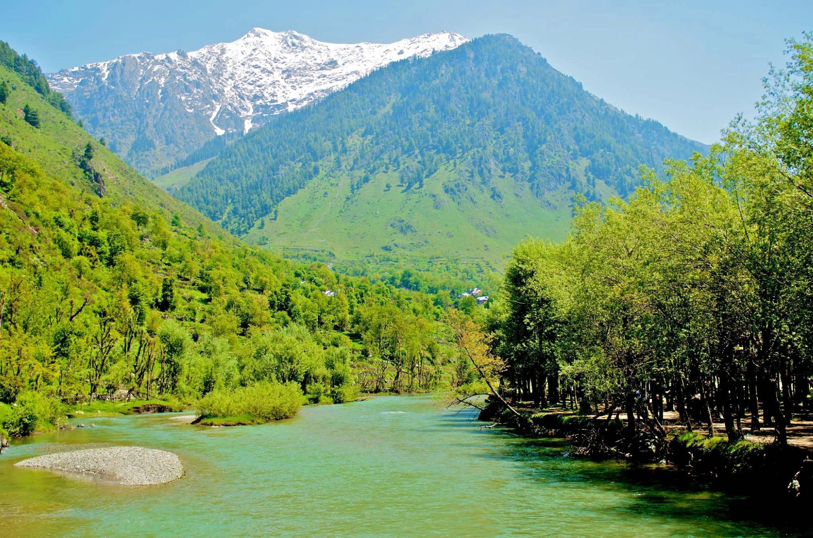
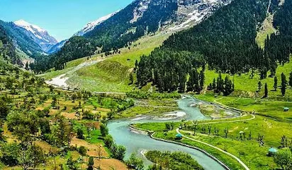
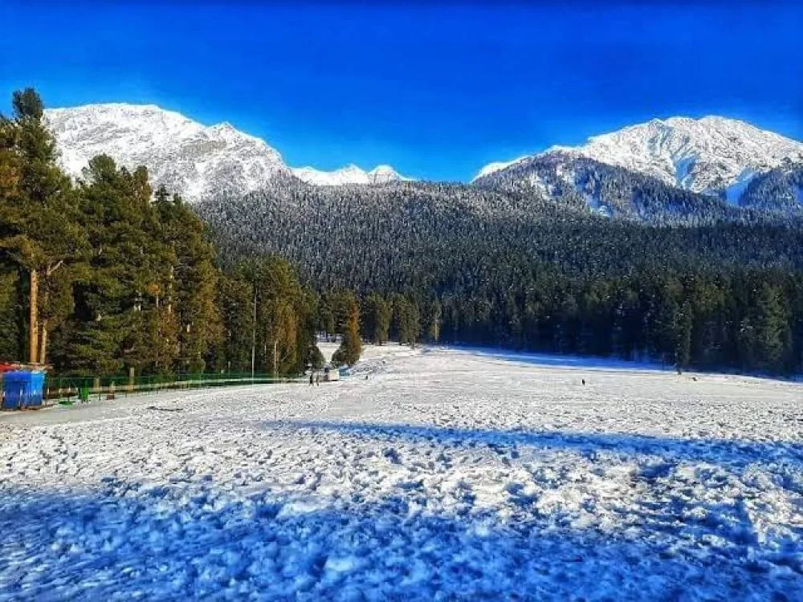

Nestled amidst the breathtaking mountains of Jammu & Kashmir, Pahalgam is one of the most beautiful hill destinations in India. Surrounded by snow-covered Himalayan peaks, lush green valleys, pine forests, rivers, and scenic meadows, Pahalgam attracts nature lovers, honeymoon couples, adventure seekers, and photographers throughout the year. Located on the banks of the beautiful Lidder River, Pahalgam is famous for its peaceful atmosphere, stunning landscapes, trekking routes, horse riding experiences, and nearby valleys like Betaab Valley, Aru Valley, and Baisaran. Whether you are planning a romantic honeymoon, family vacation, backpacking journey, or Kashmir road trip, Pahalgam offers unforgettable Himalayan beauty and serenity. The charming landscapes, cool climate, wooden houses, flowing rivers, and snow-covered mountains make Pahalgam one of the most scenic destinations in Kashmir.
The name Pahalgam is believed to mean “Village of Shepherds.” Historically, the region was inhabited by shepherd communities and local Kashmiri tribes who depended on livestock and mountain agriculture. Pahalgam later became an important stop on the ancient Amarnath Yatra pilgrimage route. Over time, the natural beauty of the region attracted tourists from across India and the world, turning it into one of Kashmir’s most popular hill stations. Today, Pahalgam remains famous for its untouched natural beauty, cool climate, forests, valleys, and peaceful mountain atmosphere.
Betaab Valley is one of the most famous tourist attractions near Pahalgam. Surrounded by pine forests, snow-covered mountains, and flowing streams, the valley is known for its cinematic beauty and peaceful environment. The valley became famous after the Bollywood movie “Betaab” was shot here. Today, it is one of the most photographed locations in Kashmir.


Aru Valley is a breathtaking valley surrounded by forests, meadows, rivers, and snow-capped mountains. It is one of the best places near Pahalgam for nature lovers and adventure travelers. The peaceful atmosphere and scenic beauty of Aru Valley make it ideal for camping, trekking, horse riding, and photography.
Popularly known as the “Mini Switzerland of Kashmir,” Baisaran Valley is famous for its green meadows surrounded by dense pine forests and snow-covered mountains. The valley can be reached by horse riding or trekking from Pahalgam town and offers mesmerizing panoramic views.


The Lidder River flows beautifully through Pahalgam and adds magical charm to the destination. The river is famous for scenic riverside walks, trout fishing, rafting, and photography. The sound of flowing water combined with mountain scenery creates a peaceful and refreshing atmosphere.
Chandanwari is a scenic destination located near Pahalgam and serves as the starting point of the Amarnath Yatra pilgrimage. The area is famous for snow activities, mountain landscapes, glaciers, and beautiful valleys during winter and early summer.
Tulian Lake is a high-altitude alpine lake surrounded by snow-covered mountains and rocky landscapes. Reaching the lake requires trekking, making it popular among adventure enthusiasts and trekkers. The turquoise blue water of the lake offers stunning Himalayan scenery.
The local market of Pahalgam is famous for Kashmiri handicrafts, dry fruits, woollen clothes, shawls, souvenirs, and traditional Kashmiri items. Tourists also enjoy exploring local cafés and riverside restaurants around the town.
Summer is one of the best times to visit Pahalgam with pleasant weather, green valleys, and beautiful sightseeing conditions.
During monsoon, Pahalgam becomes lush green and peaceful with fewer tourists.
Winter transforms Pahalgam into a snowy paradise with frozen landscapes and white valleys.
Pahalgam is one of the best destinations in Kashmir for adventure lovers and nature explorers.
Pahalgam offers delicious Kashmiri cuisine along with North Indian and Mughlai dishes. Popular dishes include:
Traditional Kashmiri flavors and riverside cafés make the food experience in Pahalgam memorable for travelers.
Pahalgam is well connected by road from Srinagar and other parts of Kashmir. The scenic drive through valleys and saffron fields is extremely beautiful.
The nearest major railway station is Jammu Tawi Railway Station.
The nearest airport is Srinagar International Airport, located around 90 km from Pahalgam.
Planning a Kashmir trip becomes smooth and memorable with Wander & Wonder Travels. Our carefully designed Kashmir packages cover Srinagar, Gulmarg, Sonamarg, and Pahalgam with comfortable stays and scenic experiences.
Why Choose Wander & Wonder Travels?
If you are dreaming of exploring snow-covered valleys, rivers, meadows, and the magical beauty of Kashmir, Wander & Wonder Travels is your perfect travel partner for unforgettable Himalayan journeys.
Explore Kashmir Packages →